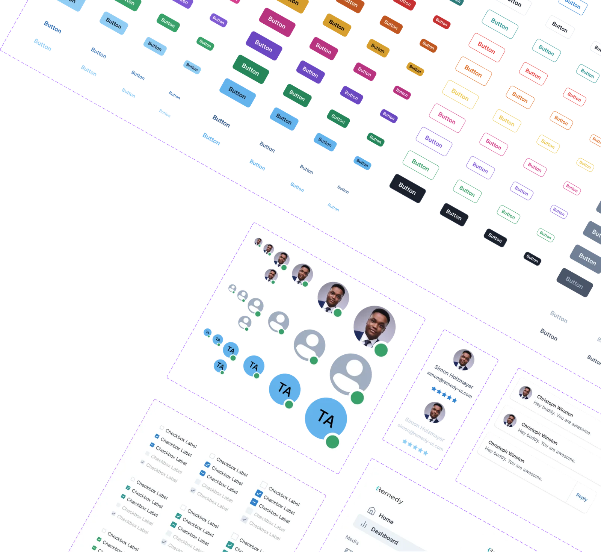
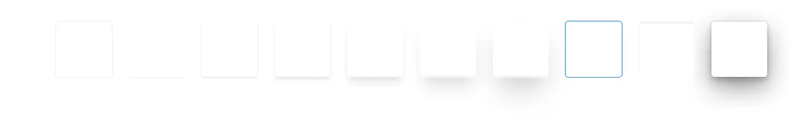
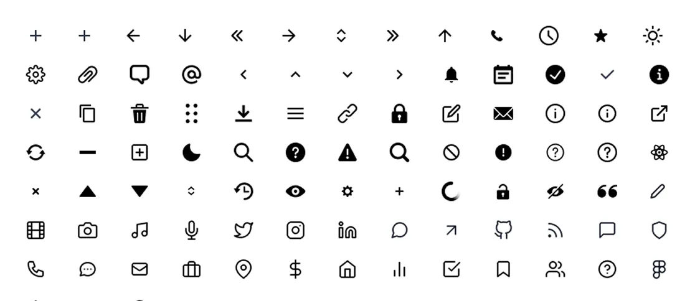

FASTER
~45% less development time at handoff
Reported by leadership after the first rollout.
Remedy · Design System Case Study
One shared, themeable design system for every Remedy product team, on web and React Native.

Remedy Design System 2.0 is a universal, atomic design system built so every product team at Remedy could design and ship from one shared library, instead of starting from scratch on each project.
It covers foundations, components, blocks and responsive screen templates, plus a developer-built theme constructor that keeps the Figma library and the code in step.
The situation
Remedy is a large product company with many teams, but it had no design system they could share. The same basic parts were designed and built again and again, and handoff from design to development was slow.
STARTING POINT
PROCESS & CONTRIBUTION
1. Foundations
The system starts with styles: colour scales, a type scale, spacing and elevation. Every component reads from them, so changing a primary colour, a font or a corner radius updates every component and every block that uses it.

2. Atoms & molecules
The system is atomic. The smallest components, the atoms, have editable colour, size, mode and state. Bigger elements, the molecules, such as buttons, inputs and selects, are composed from them by set rules, so every variant stays consistent.

3. Blocks
From molecules come bigger blocks, the organisms, which appear in many flows. The first set followed Material Design rules and research, and was meant to keep growing with components from teammates’ live projects.
A designer could pick a ready-made solution and adapt it, or use it as a starting point for something new. Every block works in light and dark mode.
4. Screens
Ready shells and page templates show how blocks combine into full screens on desktop, tablet and mobile. Teams treat them as a starting point to change and extend, not a fixed layout. Select a screen to see it larger.
5. Theme constructor
On the development side, a developer built a library of the same elements with the same rules, in parallel with the Figma library, and added each new component I designed.
Its theme-constructor site lets the team change colours, corner radius, fonts and other details and see straight away how every element looks. The result can be shown for approval, or exported as a theme and as component code for the product.
At the time, Figma had no mature variables or token tooling, and AI-assisted handoff didn’t exist. Theming, variants and the link between design and code were solved by hand: one style foundation in Figma, mirrored one to one in a developer-built theme constructor.
DESIGN OUTCOME
One consolidated system that every Remedy team could design and build from, growing with each project.
FASTER
Reported by leadership after the first rollout.
SHARED
Web and React Native, re-themed per product instead of rebuilt.
LIVING
New components, typical screens and flows added from live projects.
Design systems · Atomic design · Theming & design tokens · Component libraries · Responsive patterns · Developer collaboration · Design-to-code handoff
NEXT PROJECT